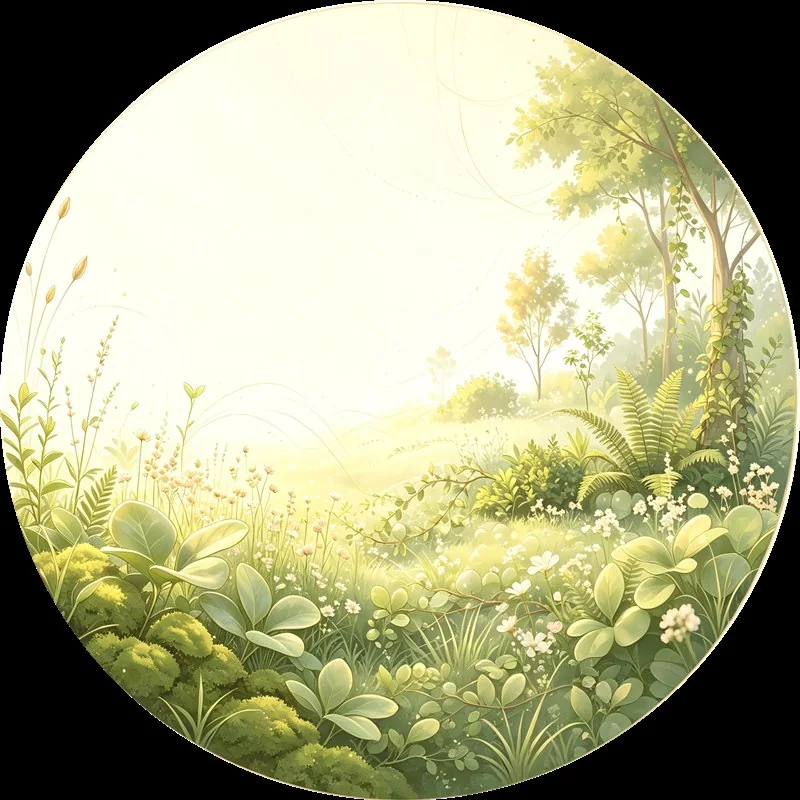
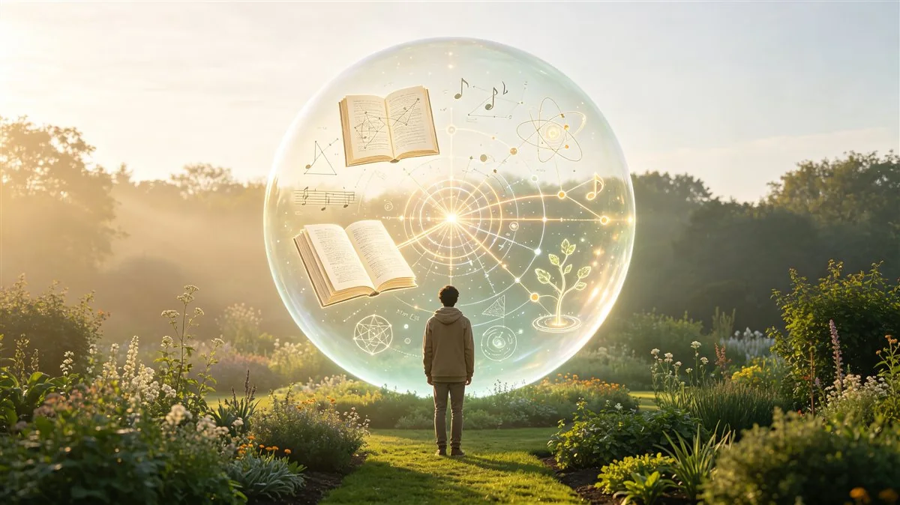
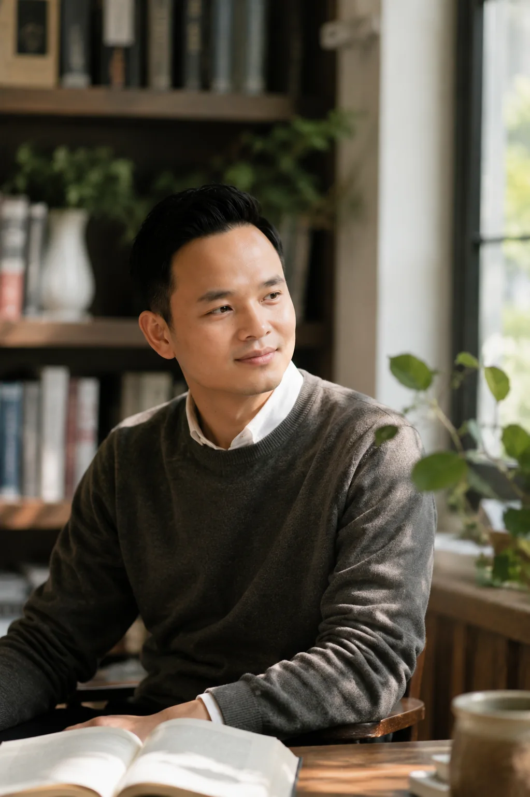
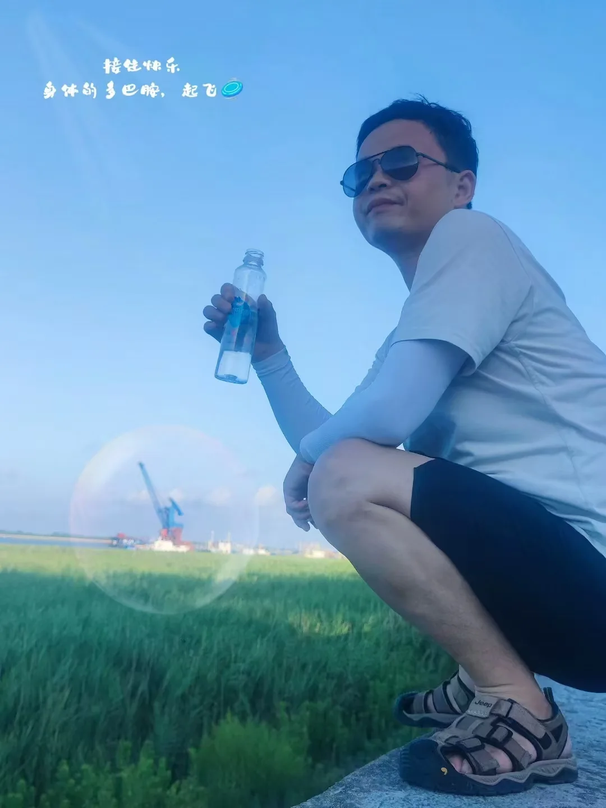
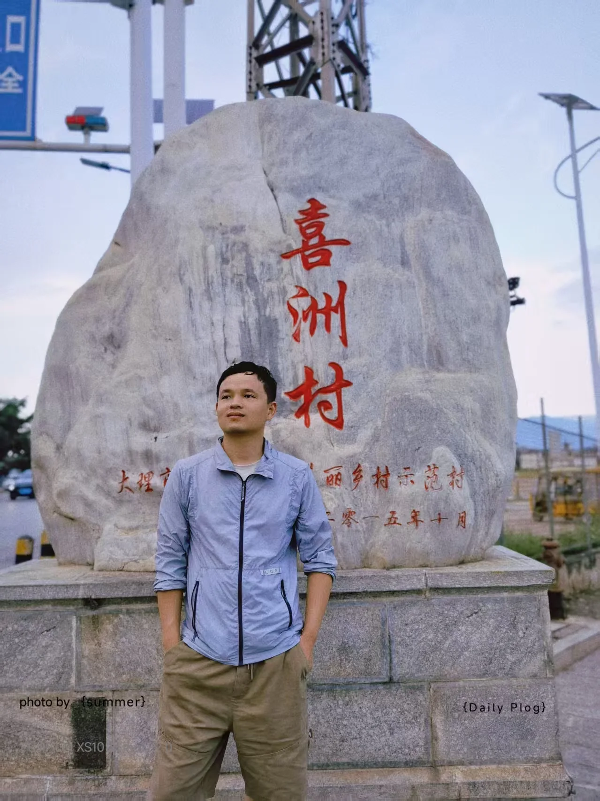
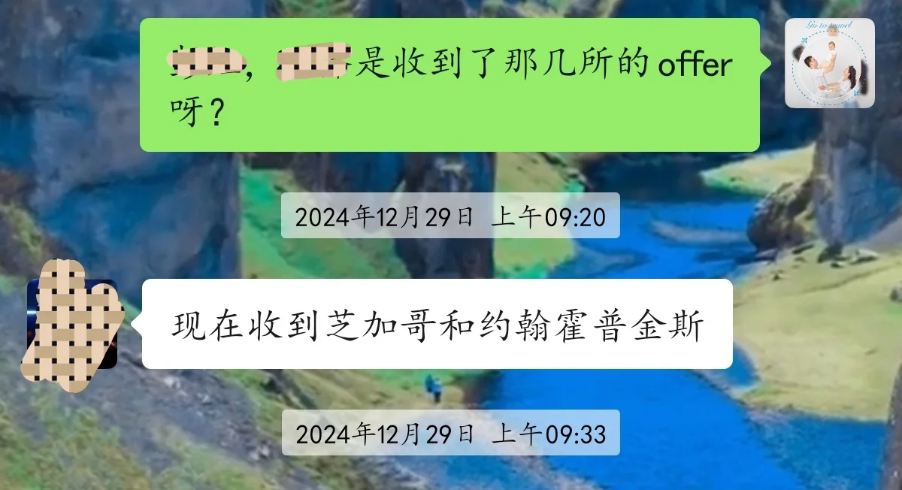
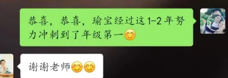
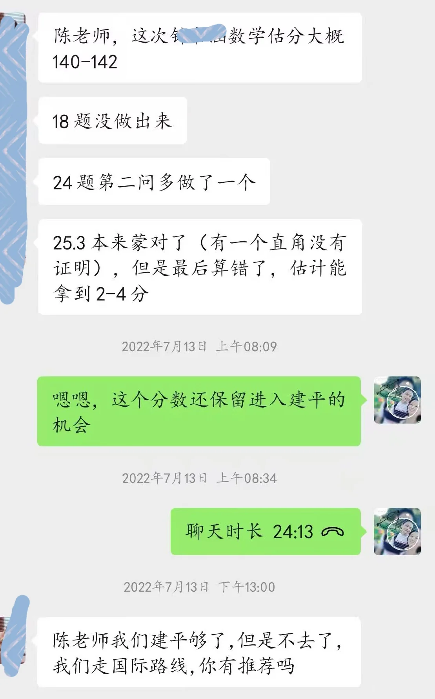
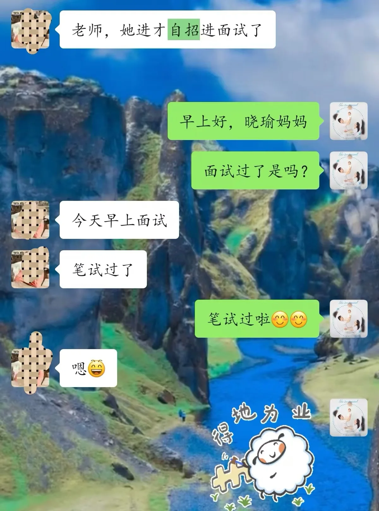
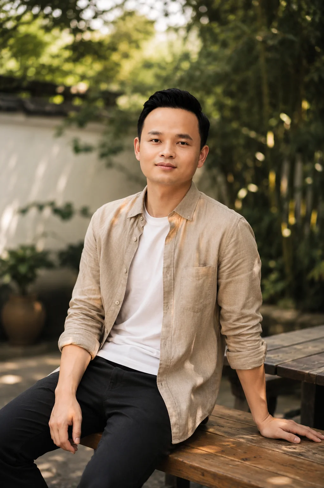

我们从小被成绩、学历、职业、家庭角色和别人的期待定义，却很少有人真正学习过：我是谁？我想成为什么样的人？我这一生究竟要怎么活？
LOS 生命成长系统，关注的不是教你成为“更优秀的别人”，而是帮助你觉察自己、理解自己、认识自己的天赋与需要，重新建立身体、情绪、关系、认知、事业与使命之间的生命秩序。
因为真正的成长，不是拥有更多，而是越来越清楚：我是谁，我要什么，我为什么而活，以及如何把想法变成真实的人生。
LOS，陪你从“活着”走向“活成自己”。
我一直在寻找一个问题的答案：
十多年的教育实践，让我越来越清楚地看到：真正决定一个人长期状态的， 往往不只是知识、成绩或学历，而是他如何认识自己、管理自己、与人连接、 面对困难，以及把想法变成行动。
LIFE OPERATING SYSTEM
不是教你成为别人，而是帮助你逐渐成为自己。 LOS 是我正在构建的一套长期成长体系：从觉察开始， 建立生命秩序、行动能力与创造能力。

03 / WHAT I’M BUILDING
不是把自己包装成一个标签，
而是把长期思考变成真实的作品。
LOS · 生命成长操作系统
研究人的身体、心智、关系、财富、事业、创造能力与使命如何形成一个长期成长系统。
教育与家庭成长
陪伴孩子、家庭与教育者，关注成绩之外的生命力、关系、方向和成长。
AI 与个人创造能力
探索 AI 如何成为人的“虚拟员工”，让普通人拥有更强的创造能力与行动能力。
音乐、写作与表达
把抽象的思想变成音乐、文字、影像、课程与产品，让思想能够被感受。
04 / JOURNAL
我们从小被成绩、学历、职业与别人的期待定义，却很少真正学习过：我是谁？我要怎么活？LOS 陪你从“活着”走向“活成自己”。
我们从小被成绩、学历、职业、家庭角色和别人的期待定义，却很少有人真正学习过：我是谁？我想成为什么样的人？我这一生究竟要怎么活？
LOS 生命成长系统，关注的不是教你成为“更优秀的别人”，而是帮助你觉察自己、理解自己、认识自己的天赋与需要，重新建立身体、情绪、关系、认知、事业与使命之间的生命秩序。
因为真正的成长，不是拥有更多，而是越来越清楚：我是谁，我要什么，我为什么而活，以及如何把想法变成真实的人生。
LOS，陪你从“活着”走向“活成自己”。
我们并不缺知识。很多人知道应该早睡、运动、阅读、学习，也知道应该改变自己，可真正能够持续做到的人却并不多。
因为知道，是认知层面的改变；做到，是整个生命系统的改变。行动不仅取决于意志力，还受到身体状态、情绪、注意力、环境、习惯以及即时反馈的影响。
所以，真正的成长不是不断给自己增加知识，而是建立一套能够让认知进入行动、行动形成反馈、反馈推动迭代的系统。LOS 关注的，正是这条从“我知道”到“我做到”，再到“我成为”的完整路径。
成长，不是懂得更多，而是让知道的事情真正发生在生命里。

03如果教育只留下分数，孩子即使考上了好学校，也可能依然不知道自己是谁、喜欢什么、想去哪里，更不知道如何面对真实世界。
真正的教育，不只是把知识装进孩子的大脑，更重要的是帮助一个人认识自己、发展天赋、建立思考能力、学会与人相处，并拥有面对挫折和选择人生的能力。
我们希望培养的，不只是一个会考试的孩子，而是一个有生命力、有判断力、有责任感，能够认识自己、创造价值，并为自己人生负责的人。
教育的终点，不是标准答案，而是一个真正能够走向世界、活出自己的人。
当 AI 可以帮助我们执行任务、搜索信息、整理资料，甚至完成越来越多的创作，未来真正稀缺的，可能不再只是“会做事的人”，而是知道为什么做、应该做什么，以及要创造什么的人。
AI 可以替我们提高效率，却无法替我们决定人生的方向。
所以，AI 时代真正需要升级的，不只是工具，而是人的判断力、创造力、审美力、关系能力与意义感。
我们要学习的，不是与 AI 比谁更快，而是学会让 AI 成为自己的“虚拟员工”，把时间和生命还给真正重要的事情：思考、创造、连接、选择，并成为自己人生的主人。

05 / ABOUT NOAH
From education to life
我从上海的教育现场开始，长期与孩子、家庭和教育者一起工作。多年的陪伴让我看到：一个人的人生，很早就开始被身体、家庭、学习方式、关系模式、价值观与行动方式塑造。
后来，我开始把视野从“如何教好一个孩子”扩展到“如何帮助一个人活好一生”。自然教育、蒙台梭利、脑科学、行为习惯、家庭经营、生涯规划、财富、创业，以及今天的 AI，都逐渐进入我的研究与实践。
06 / MY STORY
从全科到理科，从 K1 到博士，
从上海到海内外。
-- Teacher Story --
陈老师，英文名 Noah（挪亚老师），江苏人，本科就读于南京航空航天大学工科学院，参加过葛军命题的那一年高考，于 2023 年获得加州大学（美）教育学硕博免试资格。
2010 年开始接触 K12 教育，从早期的全科教育到后期专注理科教育，至今 15 年+。所带学生从 K1–K12 到如今的研究生、博士生，学生遍及海内外。


教研与课程
挪亚老师长期参与并带头理科教研，总结并推广了“演绎法”与“中高考怎样炼成”系列课程，帮助学生在掌握理科知识的同时，学会如何把知识应用到实际问题中去。
他也一直致力于多科联动学习，开拓了《倍速阅读》《超级记忆》《左右脑开发》《从脑科学与生物科学角度看当今的应试教育》等系列课程，并跟随近代量子力学先驱者卡洛琳·丽芙深入学习，致力于个性化教育，帮助学生提升综合素质、快速学习与高效记忆的能力，引导学习者展现优异能力与独立思想。
对话与成果
学生与家长发来的消息，
是这些年最真实的回响。




上海四校八大、上海双语四校八大，以及德国、荷兰、新加坡等多所中学和高中。
学生考入清华、北大、上海交大、复旦、香港中文大学、新加坡国立大学、南洋理工、芝加哥大学、约翰霍普金斯大学等国内外名校。
学生遍及上海、江苏、四川、河南、北京等多个省市，以及欧洲国家。
学习方式
让我们从身边开始，去活出不一样的人生。
08 / CREATION
音乐、课程、文章、演讲、AI 产品——创作不是附属品，而是把内在世界带进现实的方式。

A SIMPLE BELIEF
不是设计成别人期待的样子，
而是越来越接近那个真实、丰盛、有力量的自己。
09 / CONNECT
也许，我们可以一起探索。